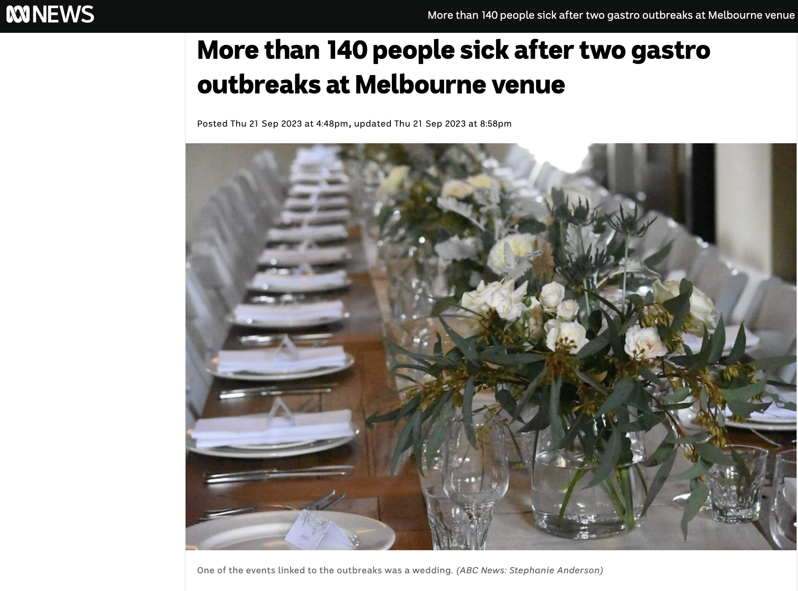
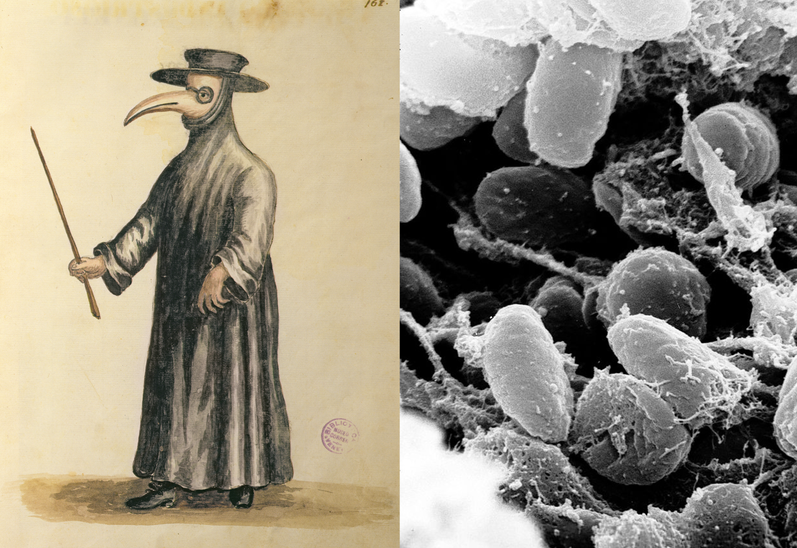

Chapter 2 Introduction
What will you learn today?
- What is an infectious disease, what is an outbreak and who are disease detectives?
- How can R be used to investigate outbreaks?
- Then YOU are going to solve an outbreak!
The slides for this workshop can be found here!
2.1 What are infectious diseases?
Infectious diseases are caused by certain microorganisms, such as bacteria, viruses, parasites or funghi, and will make people (or animals) sick when they are exposed to these microorganisms. Most microorganisms don’t make us sick, but some do, and these are known as pathogens. There are lots of different ways that you might get an infectious disease. Some ways include breathing respiratory droplets, eating contaminated food or water, insect bites and many many more !
2.2 What is a disease OUTBREAK?
The World Health Organisation definition of an outbreak as:
the “occurence of disease in excess of normal”.
In other words, a disease outbreak is the occurrence of cases of disease in excess of what would normally be expected in a defined community, geographical area or season. An outbreak may occur in a restricted geographical area, or may extend over several countries. It may last for a few days or weeks, or for several years.
This might be caused from a new pathogen, bringing pathogens to new areas, a mutating pathogen. Many infectious diseases now have vaccines that mean outbreaks to these pathogens occur much less frequently (for example: measles, chicken pox, influenza etc.).
2.3 Viruses
2023: Novovirus Outbreak

Norovirus causes vomitting and diarrhoaea (you might call this gastro)
It is extremely stable in the environment and highly contagious
Ingesting norovirus causes disease
There is no vaccine available for norovirus
2019: COVID-19

The COVID-19 pandemic was caused by a virus known as SARS-CoV2. It caused a global pandemic.
A pandemic is defined as an infectious disease that is affecting multiple parts of the world, i.e. multiple countries or continents are experiencing an epidemic
There are now several types of vaccines that have helped to reduce the severity of this infection
2014: Ebola

Ebola virus disease (EVD) is a severe fever that often causes fatal illness and affects humans and other primates.
This virus is transmitted to people from animals (e.g., fruit bats, porcupines)
Ebola spreads in human populations by direct contact with blood, secretions, organs or other bodily fluids of infected people, and contaminated surfaces and materials
The first outbreaks occurred in villages in Central Africa and the 2014-2016 outbreak was the largest.
For more information on the 2014-2016 Ebola outbreak see the World Health Organisation website.
2009: Swine Flu
“Swine-Flu” or the 2009-2010 H1N1 Influenza A outbreak was the first recorded time in human history that this virus caused infections in humans.
It was called swine flu and was a combination of influenza viruses that infect pigs, birds and humans.
It was declared as a pandemic by the World Health Organisation in 2009 and there were approximately 284,400 deaths worldwide.
Symptoms include fever, cough, runny nose and red eyes.
This virus continues to circulate as a seasonal virus.
The seasonal flu vaccine now helps protect against this strain of flu and other seasonal flu viruses.
For more information see the World Health Organisation website.
2.4 Bacteria
Mycobacterium ulcerans: Buruli ulcer

Buruli ulcer is caused by a bacteria known as Mycobacterium ulcerans
The bacteria is slow growing and flesh eating and is endemic to Melbourne and surrounds
Endemic means that there is an ongoing transmission of a pathogen in that area
Mode of transmission not entirely understood but likely involves mosquitoes and possums
Jan 2024 Update ! Scientists find out how M. ulcerans is spread.
Yersinia pestis: Black Death

The Plague or Black Death is a disease caused by a bacteria known as Yersinia pestis.
Infections occur when humans are bitten by a rodent flea that carries this bacterium or by an infected animal.
This disease was infamous in killing millions of people in Europe in the Middle Ages.
Symptoms include headache, chills, weakness, swollen lymph nodes, among others depending on the type (Bubonic, Septicemic, Pneumonic).
But today we have modern antibiotics that can treat Yersinia pestis.
More information on the plague can be found on the Centre for Disease Control website and the World Health Organisation website.
2.5 Who are real-life disease detectives?
- Public health departments in the government
- How to improve the health of everyone
- Academic research at Research Institutes and Universities
- Make new discoveries, such as developing new drugs or vaccines
- Doctors and health staff
- Keep their patients safe
And many others too !
An epidemiologist is someone who investigates the patterns and causes of health and disease.